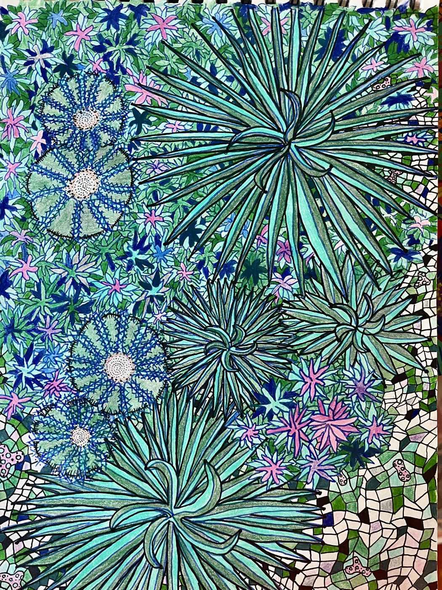
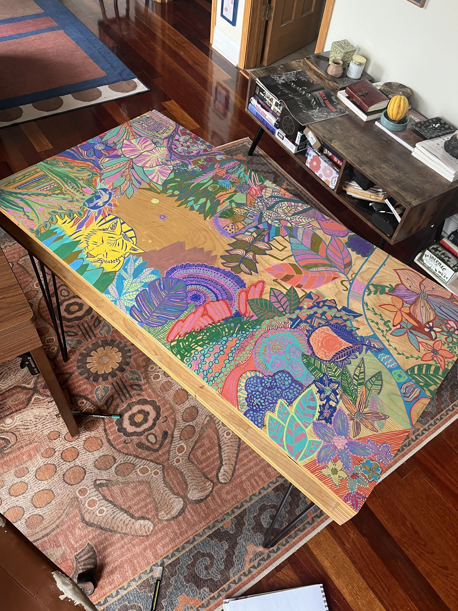
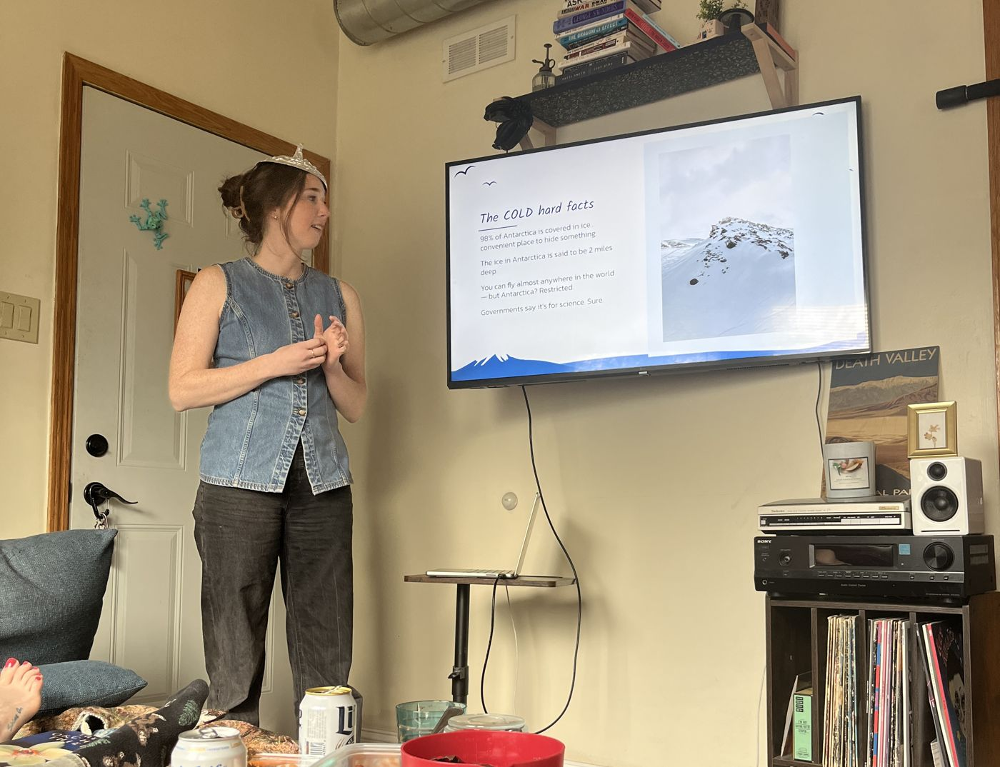
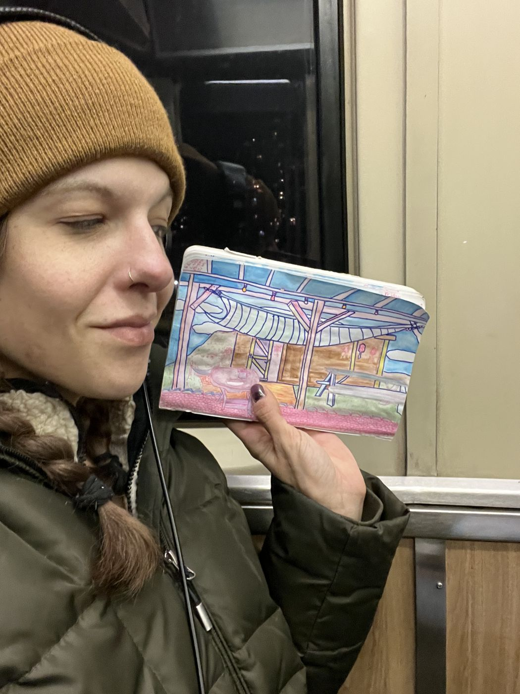

Art · Community · Data · Chicago
Fifteen years of studying how people talk, search, and vote, turned into drawings, films, public experiments, a table covered in friends' doodles, and the occasional resurrected skeleton.

Succulent study
Research, custom tools and automation, and campaigns people remember, for brands, startups, and mission-driven organizations.
48 Hour Film Project · Chicago 2026 · made with my brother
A first date, a confession about an illegal abortion in Texas, and then the slow creep of being watched. A short about government and social surveillance, and the uncertainty, paranoia, and loss of control that come with it.
I host regular nights at my place for people to talk, make things, and nerd out together: paint-pen tables, resin nights, and PowerPoint parties. Some of my favorite work has come out of a crowded living room.

Monthly art nights
Ten friends, paint pens, wine, and one plywood table. Everyone took a corner, then I stitched them into one landscape.

Talks & slideshows
Everyone brings a short presentation about whatever they're obsessed with. The more niche, the better.
How social media shapes what we search, who we trust, and how we vote.
Mapped how social feeds were sorting voters into echo chambers that never overlapped. The data called the 2016 result.
Read →An infographic using #JeSuisCharlie to show how hashtags started steering Google searches, and with them the news cycle.
View →Worked with Joe Yun on the University of Illinois' open social-data research platform, and spoke about it at a conference there.
More →The written analysis from the Terkel project: keyword and theme shifts from 1980 to today, by generation. Coming after the interviews wrap.
Soon
I started as a research assistant at the University of Illinois and spent the next fifteen years in people analytics, social media research, and AI. I've worked on strategy, research, dev, and analytics teams, mining big social data for some of the biggest brands in the world.
Along the way I noticed that everything I make comes back to the same three things: art, community, and data. This site is where the art, the research, and the gatherings live. When I do that work for clients, it's under my studio, Squidbird.
I care a lot about AI ethics, and about making sure the tools we build work for everyone, not just the people who build them.
Collaborations, exhibitions, talks, an invite to the next gathering, or just a good weird idea.